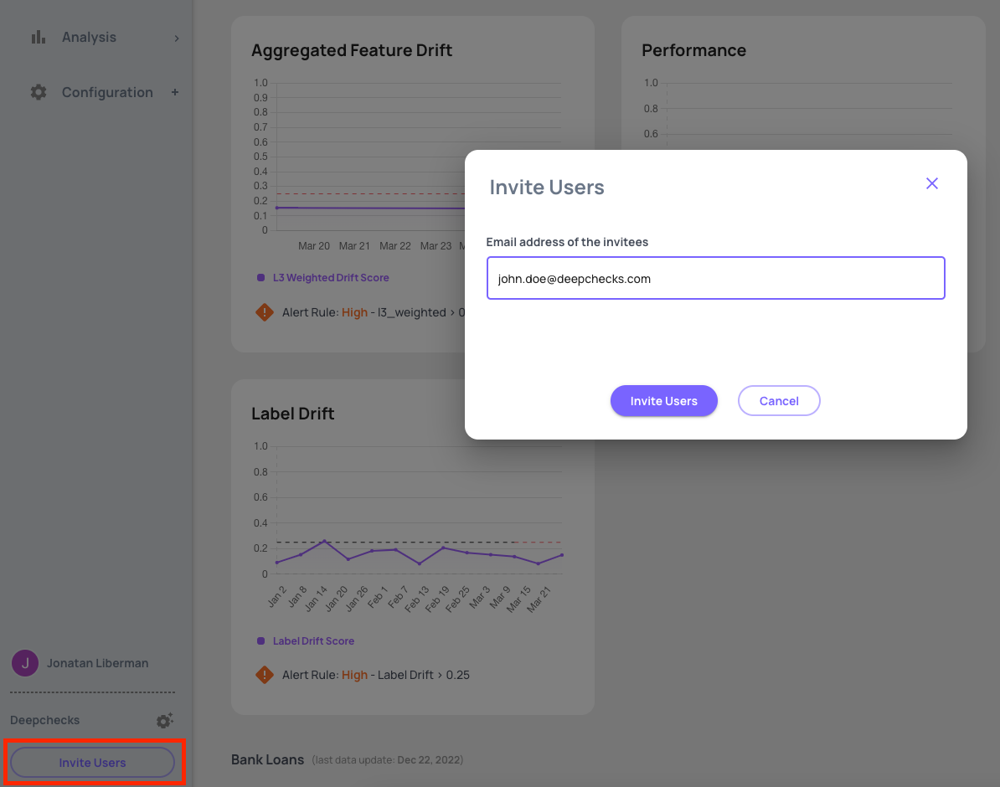
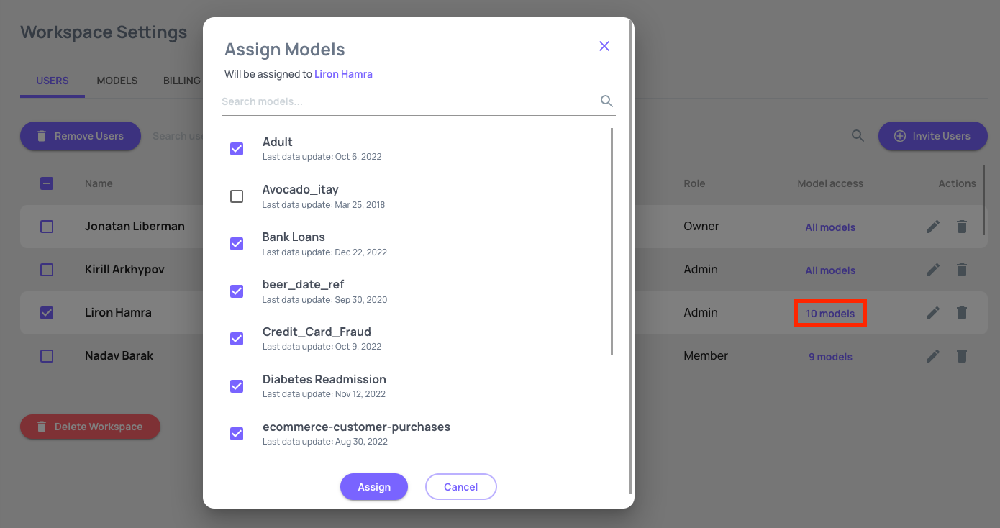
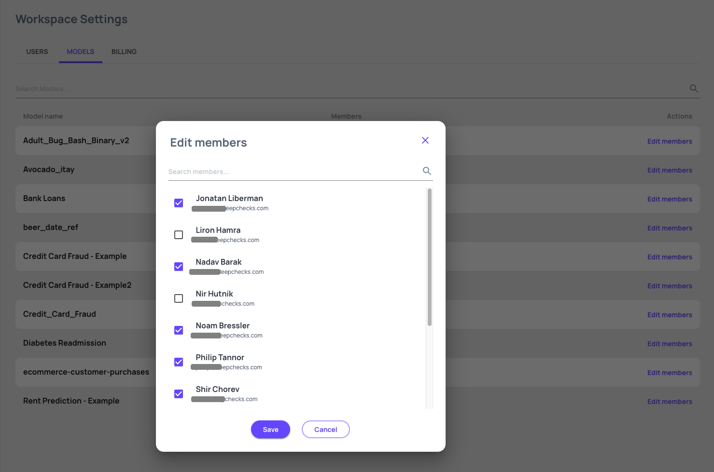

Workspace Settings & Users#
The Workspace Settings is here to help the admin manage user provisioning, control access of users to models and modify the subscription plan. This is also an easy way of separating the monitoring data in cases where you have completely independent teams, with a significant number of models to monitor.
Invite a user#
You can invite new users via the “Invite Users” button:
{kind=link}
Workspace Users Tab#
Member roles assignment#
- Here you can edit users role to grant users various permissions.
Owner: has access to all areas of the system and is the only one that can assign users role, and update the subscription.
Admin: can set model permissions and configure integration.
User: can create and edit models/monitors/alerts if he has permissions to the relevant model.
{kind=link}
Model access setting#
Here you can assign model access permissions to users. When you need to add/remove access of multiple models to a single user, this is the best place to perform the operations.
{kind=link}
Workspace models Tab#
When you need to review/edit access permissions for a specific model, this is the recommended way of performing these operations. The models view allows you to bulk assign users are remove access to multiple users in one operation for a single model.
{kind=link}